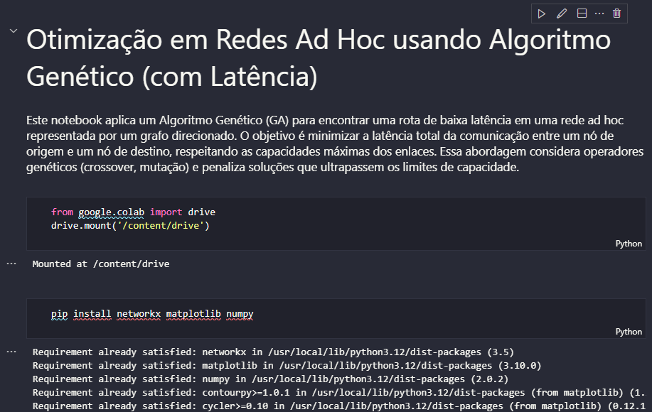

O que é
O projeto explora como técnicas evolutivas podem selecionar caminhos melhores em redes dinâmicas. A aplicação combina raciocínio matemático, modelagem de redes e busca heurística para comparar possibilidades de roteamento.
Otimização e redes
Projeto ligado à apresentação de 2025 sobre otimização do fluxo de dados em uma rede ad hoc com múltiplos caminhos, usando algoritmos genéticos como estratégia heurística.

O projeto explora como técnicas evolutivas podem selecionar caminhos melhores em redes dinâmicas. A aplicação combina raciocínio matemático, modelagem de redes e busca heurística para comparar possibilidades de roteamento.